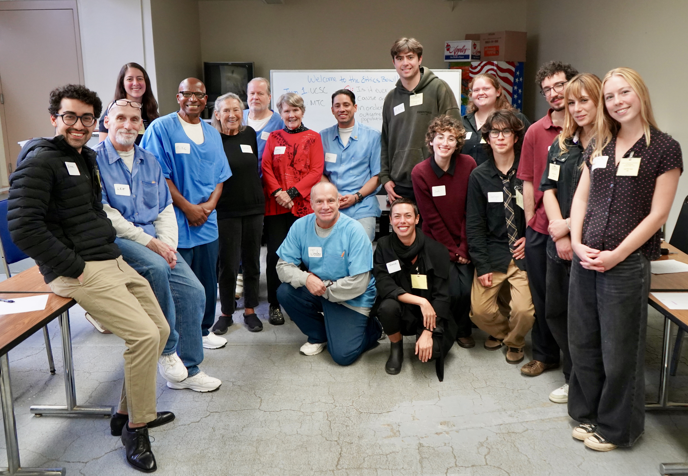
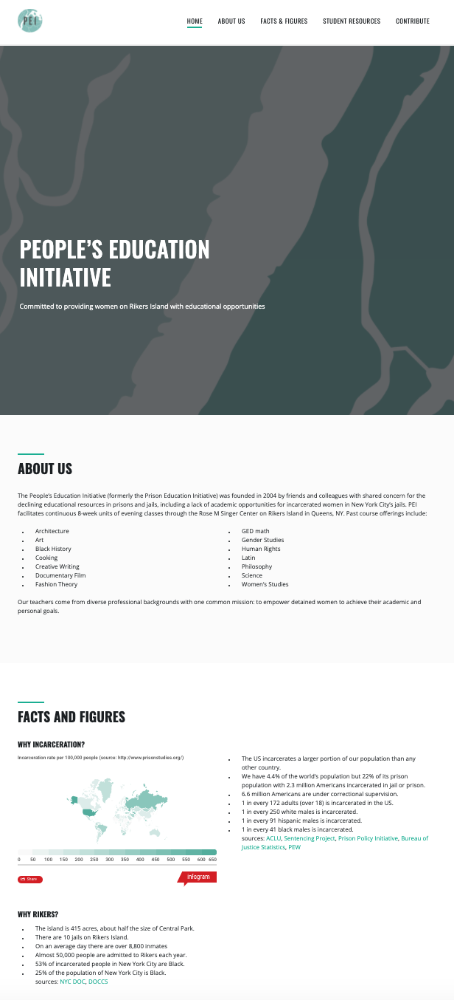

Diversity

Teaching Across Diverse Contexts
Throughout my teaching career—at Miami Dade College, Pace University, CUNY City Tech, Dutchess Community College, and within the Florida public school system—I have worked with students whose backgrounds required thoughtful, adaptive pedagogical approaches. Some were young mothers; others had recently lost family members in the 2010 earthquake in Haiti; many had limited financial and educational resources. In such contexts, I have made it a priority to ensure that every student is not only able to follow the material, but is genuinely engaged and intellectually curious.
I design my courses to connect philosophical questions with students’ lived experiences, whether through applied ethical issues or more abstract inquiries. I also maintain an open-door policy, encouraging students to share circumstances that may affect their academic success and well-being. These practices reflect my belief that inclusive teaching requires both intellectual rigor and sustained attentiveness to students’ lives beyond the classroom.
Public Philosophy and Carceral Education
My commitment to inclusive philosophy deepened through my work with the Prison’s Education Initiative at Rikers Island, where I facilitated weekly philosophical discussions at the Rose M. Singer Center. In this context, I saw myself not as a lecturer but as a facilitator—someone who helps participants develop habits of inquiry through collaborative conversation and rational exchange.
Teaching in prison requires constant adaptation. The loss of autonomy and the complex power dynamics of incarceration make philosophical engagement particularly challenging. Yet these conditions also make clear how essential it is to create spaces where individuals can exercise intellectual agency. In New York, I structured sessions around open-ended questions—“What is happiness?” “What does it mean to be a woman?”—and encouraged small-group discussion, collective reflection, and the development of shared conceptual vocabularies. I also introduced literary and philosophical texts, inviting participants to connect them to their own experiences.
Today, I volunteer in San Quentin for https://sanquentinnews.com/ethics-bowl-mt-tam-college-hosts-dialog-with-uc-santa-cruz/Ethics Bowl programming we organize with the Center for Public Philosophy involving Mount Tamalpais's students. I am constantly reminded that the “public” is not a homogeneous audience of already-privileged individuals, but includes those who rarely have the opportunity to engage in abstract reasoning due to structural constraints. Public philosophy, in this sense, is not simply about accessibility; it is about actively creating the very conditions needed for participation.

Expanding Philosophy Beyond the Academy
My commitment to inclusive philosophy extends beyond formal teaching. Through my podcast Can You Phil It?, I aim to make philosophical inquiry accessible to broader audiences by exploring topics such as desire, identity, technology, and meaning in a clear and engaging way. This work reflects my belief that philosophy has a public responsibility: not only to advance scholarship, but also to contribute to clearer, more thoughtful public discourse.
I am aware of the challenges involved in popularizing philosophy—the risk of oversimplification, the mismatch between public expectations and philosophical practice—but I remain committed to bridging this gap. In a world where ideas are often confused or instrumentalized, the ability to think philosophically is an increasingly valuable tool.
Structural Commitments: Rethinking Philosophy’s Boundaries
My commitment to diversity, equity, and inclusion in philosophy emerges from both lived experience and sustained pedagogical practice. I believe that the constricting expectations in many philosophy departments are largely structural: while few faculty members would deny the importance of diversity, the discipline remains notoriously slow to change. This persistence of the status quo has long shaped hiring practices and intellectual norms in ways that have, until recently, systematically prevented—implicitly or explicitly—scholars with unconventional profiles from gaining recognition within the academic ivory tower.
Encouragingly, there is growing recognition of the value that diverse personal experiences and worldviews bring to philosophical inquiry. It is precisely this concern for equity and inclusion that first led me to engage in public philosophy.
Rethinking the Canon and Intellectual Inclusion
Finally, my commitment to diversity involves a critical engagement with the discipline itself. Philosophy departments in Europe and the United States continue to privilege a largely Anglo-European canon, often presented as universal rather than historically situated. This marginalization of non-Western traditions—African, Asian, Indigenous—limits the scope of philosophical inquiry and reflects deeper patterns of intellectual exclusion.
My own training within the French system initially reinforced the authority of this canon, often without questioning its boundaries. I recall, for instance, eminent philosophers at the Sorbonne University lamenting the growing number of dissertations on race and gender, as though such topics undermined the philosophical tradition itself. The fact that such concerns could be expressed so openly is precisely what reveals the depth of the problem.
While I have immense respect for this intellectual heritage, I believe it is necessary to confront its limitations. I have known many scholars who left academia because their interests were deemed too marginal or unconventional. Expanding what counts as philosophy—and who counts as a philosopher—is therefore both an intellectual and an ethical imperative.
Pedagogy as Dialogue, Not Transmission
Teaching philosophy is not merely about conveying abstract theories; it is about cultivating the ability to think critically and collaboratively. It cannot be unidirectional. Professors are not experts who simply deliver answers; they must also learn from those they teach, who cannot be reduced to passive listeners.
In my classrooms, I actively work to challenge stereotypes and foster an environment where diverse perspectives are taken seriously. I view philosophical education as both an intellectual and a social practice—one that equips students to question assumptions, refine their reasoning, and engage meaningfully with others.
I know several people who dropped out of academia, bitter and discouraged, because what they wanted to study was considered too unconventional. We can only be hopeful that academia will soon look at both originality and unconventional backgrounds as assets rather than an impediment.